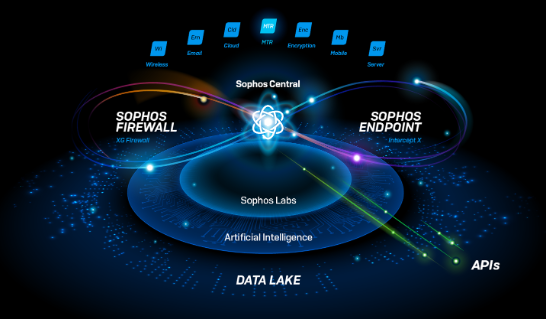
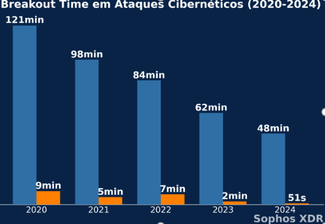
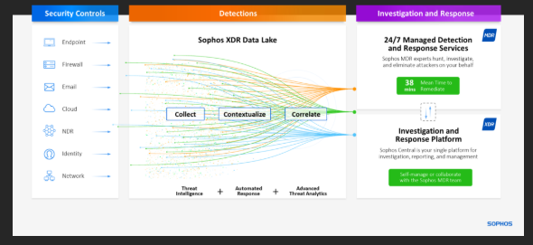
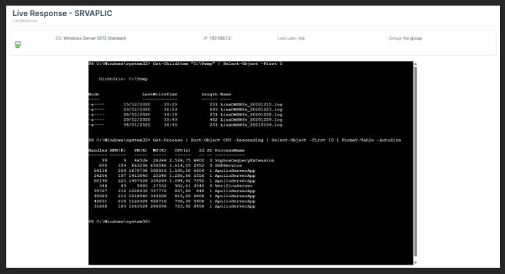
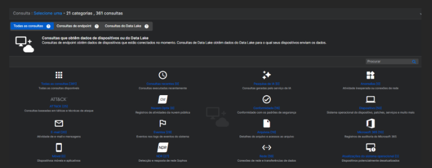
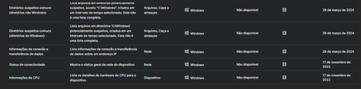

O Sophos XDR é a solução de detecção e resposta estendida da Sophos,
projetada para ir além do endpoint e fornecer visibilidade,
detecção e resposta avançada a ameaças em todo o ambiente de TI – incluindo endpoints, servidores, firewalls, e-mail, nuvem e muito mais.
A evolução das ameaças digitais tem mostrado que os invasores estão cada vez mais rápidos.
Dados globais da CrowdStrike comprovam: o tempo médio para que um atacante consiga movimentação lateral em um ambiente invadido caiu de 121 minutos em 2020 para apenas 48 minutos em 2024 com registros de ataques acontecendo em menos de 1 minuto.

Neste cenário, o Sophos XDR fornece uma plataforma e ferramentas abrangentes para que sua empresa atinja seus objetivos de segurança e negócio, mesmo frente a ameaças cada vez mais ágeis. Com visibilidade completa e análise contínua da infraestrutura de TI, o Sophos XDR identifica rapidamente os primeiros sinais de um ataque, possibilitando ação imediata para conter a ameaça antes que o invasor avance pela rede.
Ao combinar inteligência automatizada, resposta orquestrada e integração total com o SOC da Raidr, o Sophos XDR permite que sua empresa reaja dentro da janela crítica — ganhando tempo onde os atacantes estão tentando tirar.



Os casos de SOC são representados por eventos de segurança que foram detectados, analisados e mitigados. Clique nos botões acima para ver os detalhes de cada um.

A segurança cibernética precisa ser preventiva. Nossas soluções monitoram em tempo real e reagem antes que os ataques se concretizem.
Com a funcionalidade Live Response do Sophos XDR, sua equipe de segurança pode acessar remotamente dispositivos afetados em tempo real, de forma segura e autorizada. Isso permite investigar, isolar e responder rapidamente a incidentes, aplicando ações corretivas diretamente na máquina comprometida — como encerrar processos, remover arquivos maliciosos ou coletar evidências — sem depender de deslocamento ou intervenção presencial

Tenha acesso instantâneo a mais de 360 consultas pré-configuradas desenvolvidas pela Sophos, que permitem coletar qualquer informação crítica do seu ambiente de TI em segundos. Identifique vulnerabilidades, monitore ativos e garanta conformidade com agilidade e precisão. Com o Live Discovery, sua equipe de segurança ganha poder total para agir rápido, reduzir riscos e manter a infraestrutura protegida, tudo na palma da mão

